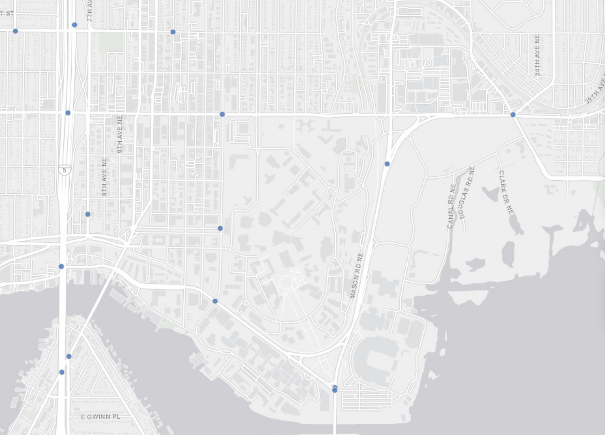

Traffic Cameras
The Traffic Cameras dataset shows the locations the cameras in the Seattle Area. The cameras are maintained by the Seattle Department of Transportation (SDOT) and the Washington State Department of Transportation (WSDOT). They are for cartographic, analysis, and tracking purposes.Around the proximity of UW, there are many traffic cameras. Knowing this information should reinforce safe driving to avoid tickets and endangering others. Here are the locations of the traffic cameras around UW
